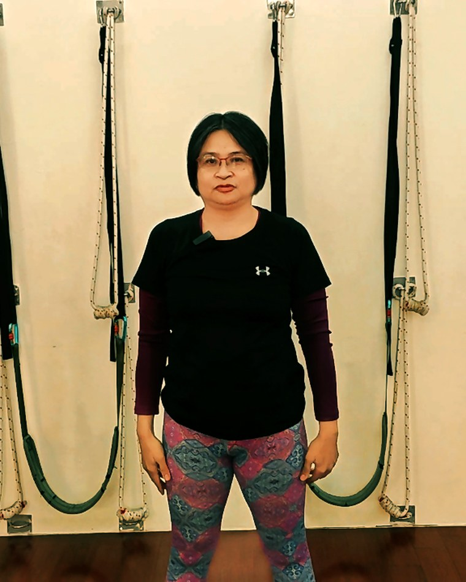
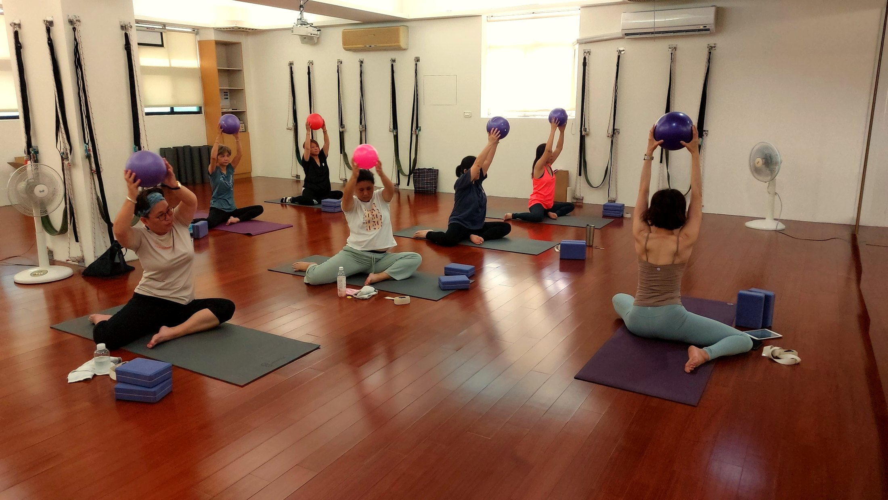

認識我們的老師
帶你練的，是真的懂身體的老師。
鑫彥瑜珈在高雄左營巨蛋旁，教學超過十年。我們有多位老師，也有小團課與一對一，能照你的身體狀況和時間，彈性安排——不急著把你拉進高難度動作，而是先把身體練回它本來的樣子。
壁繩瑜伽是我們的特色：用牆上的繩子當支撐，讓筋比較硬、怕受傷、或第一次接觸的人，也能在安全範圍裡慢慢把緊繃的地方打開。壁繩課的招牌是阿美老師，很多學員第一次上就愛上——就像上面李曉玲說的，「像參加瑜伽派對」。


下面每一則，都是高雄左營的學員在 Google 與 Facebook 留下的真實評價。沒有修飾、沒有代寫——就是他們親身體驗後，想說的話。
每個人的代償模式都不同。透過 AI 檢測看清源頭，搭配壁繩借力調整，改變真實看得見。
每天盯電腦 8 小時以上，自覺「烏龜頸」明顯，肩頸硬得像石頭，睡前常常緊到後腦勺悶痛、翻來覆去難入睡。
頭部前傾角 19°、上胸椎過度屈曲，胸大肌與肩胛提肌長期緊縮代償，導致背肌完全無法正常啟動發力。
透過壁繩打開深層胸廓張力，配合坐姿中斷練習，當天解讀即找回肩膀下沉感。3 次練習後肩頸緊繃度降 60%，夜間睡眠深度大幅改善。
「以前一直以為駝背要靠自己用力往後挺，原來是前胸太緊！老師解讀超精準，現在整天上班不再緊繃難耐。」
生完小孩後小腹總是凸出、臀部鬆弛無力，稍微站久一點下背部就痠痛難忍，常感覺「都是腰在代班出力」。
骨盆前傾角 16°、髂腰肌張力過高，腹橫肌與臀大肌失聯，走路時全由腰部代償承重。
利用壁繩懸吊骨盆中立位練習，重新喚醒臀腹深層肌力。1 個月後站立腰痠感減輕 80%，體態視覺拉長顯瘦。
「看著 AI 檢測數據才恍然大悟為什麼一直腰痠！老師一對一帶我找到骨盆位置，現在站姿很輕鬆，連小腹都縮回去了！」
雙手往上舉會卡住不舒服，下樓梯時膝蓋常有往內扣的無力感，擔心年紀增長關節加速退化。
肩關節活動度受限、下肢承重軸線內偏（膝內扣代償），臀中肌力量不足。
在壁繩卸重支撐下進行無痛伸展與下肢穩定練習。練習後雙手可順暢舉高過頭，下樓梯步伐穩健有力。
「年紀大筋很硬原本怕練不來，但老師非常有耐心！壁繩拉起來身體好輕好舒服，完全沒有負擔！」
從第一次上壁繩瑜伽，到 AI 體態檢測後的改變——聽聽學員自己的體驗。
阿美老師很專業，引導我們用對肌肉部位，氣氛很活潑輕鬆，像是參加瑜伽派對。第一次上壁繩瑜伽，就遇到這麼棒的老師，很開心，很感謝。
今天體驗AI檢測與調整，身體狀況沒有想像中的好，經過老師的調整，覺得肩頸放鬆了，腰部感覺比較鬆了，很棒的一次體驗。
新手上路，碰到了風趣幽默的老師太棒了，同學也熱心幫忙照顧，上完課心情好，體力也進步了，晚上睡覺一路到天亮。
用姿勢檢測來評估身體結構，讓我們進入課程後能以更標準的動作來學習，避免運動傷害產生，是很好的瑜珈運動館。
接觸瑜伽之後，感覺身體變得比較輕鬆，老師教學很專業，一直強調呼吸正位，練完感覺身體好像變健康了，很棒的體驗喔。
練瑜珈這段時間，感覺筋變得比較柔軟，肌耐力也變得比較好。收費合理。
來到距離住家近的瑜伽教室，上了三堂體驗課程，老師上課認真，也有壁繩和輔具瑜伽，課程多元。櫃檯藍小姐也很仔細地解說課程內容，值得推薦。
在這邊上課一陣子了～老師都很棒，也都會提醒上課時間，課程豐富，可以固定＋自由搭配其他時間，很彈性！
拉拉筋很不錯，柔軟一下筋骨。
今天體驗了 AI 姿勢檢測+一對一壁繩調整，本來肩頸僵硬、腰部痠痛，訓練完後肩頸放鬆，腰部有力，呼吸順暢。
AI 姿勢檢測 + 一對一壁繩調整，量身打造訓練方案，改善體態與提升運動效率。
做完姿勢檢測+一對一壁繩調整，肌肉有放鬆，肩頸痠痛有改善，這段時間練瑜珈，老師很親切，我練完感覺肌力有變好。
緣分看到 FB 的廣告來這裡做 AI 檢測，實地走訪一趟真的很值得！來體驗兩次，每一次都覺得身心獲得很大的舒服和放鬆，為了好好善待自己，我會堅持配合老師的訓練，為看見最好的自己而努力。
做完 AI 檢測後，知道自己緊繃的部位及為何造成緊繃的原因；做完一對一調整後，緊繃的位置有感放鬆，不適的症狀有比較改善。上課後核心力量有改善，緊繃的狀態比較舒緩，每位老師都很熱情教學，上課內容也很實用。
之前的我雖然有在運動，但完全不懂得放鬆，決定來上了瑜珈之後，到現在1個月左右，身體放鬆很多，慢慢來才是最難的，我喜歡上這種感覺了，而且老師人好好，第一堂試上就喜歡她了（偷告白），哈哈😂
＊以上皆為學員在 Google 與 Facebook 公開發表的真實評價，僅在不改變原意下微調錯字與標點。
「引導我們用對肌肉部位」「一直強調呼吸正位」——不是跟著做完就好，而是知道每個動作在練哪裡、為什麼。新手也能安心上路。
「用姿勢檢測評估身體結構，進課程後以更標準的動作學習，避免運動傷害產生」——先看懂你的身體，課程才幫得上忙。
「課程多元」「可以固定＋自由搭配其他時間，很彈性」——照你的身體和生活步調安排，長期練下去才不勉強。
鑫彥瑜珈在高雄左營巨蛋旁，教學超過十年。我們有多位老師，也有小團課與一對一，能照你的身體狀況和時間，彈性安排——不急著把你拉進高難度動作，而是先把身體練回它本來的樣子。
壁繩瑜伽是我們的特色：用牆上的繩子當支撐，讓筋比較硬、怕受傷、或第一次接觸的人，也能在安全範圍裡慢慢把緊繃的地方打開。壁繩課的招牌是阿美老師，很多學員第一次上就愛上——就像上面李曉玲說的，「像參加瑜伽派對」。

先從一次 AI 體態檢測開始——原價 NT$699，首次到店優惠 NT$299。看懂自己的身體，再決定怎麼練。加 LINE，我們幫你安排。
預約首次 NT$299 AI 體態檢測